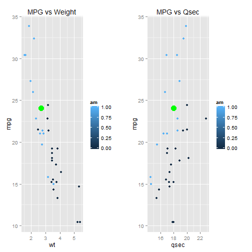

This application is built to demonstrate shiny app functionality. It is basically linear regression project.
Vasily Vinogradov
This application is built to demonstrate shiny app functionality. It is basically linear regression project.
Source data is standard mtcars data set.
head(mtcars,10)
## mpg cyl disp hp drat wt qsec vs am gear carb
## Mazda RX4 21.0 6 160.0 110 3.90 2.620 16.46 0 1 4 4
## Mazda RX4 Wag 21.0 6 160.0 110 3.90 2.875 17.02 0 1 4 4
## Datsun 710 22.8 4 108.0 93 3.85 2.320 18.61 1 1 4 1
## Hornet 4 Drive 21.4 6 258.0 110 3.08 3.215 19.44 1 0 3 1
## Hornet Sportabout 18.7 8 360.0 175 3.15 3.440 17.02 0 0 3 2
## Valiant 18.1 6 225.0 105 2.76 3.460 20.22 1 0 3 1
## Duster 360 14.3 8 360.0 245 3.21 3.570 15.84 0 0 3 4
## Merc 240D 24.4 4 146.7 62 3.69 3.190 20.00 1 0 4 2
## Merc 230 22.8 4 140.8 95 3.92 3.150 22.90 1 0 4 2
## Merc 280 19.2 6 167.6 123 3.92 3.440 18.30 1 0 4 4
We build a linear regression model to predict miles per gallon (mpg) with 3 variables :
fit3 <- lm(mpg ~ wt + am + qsec, data=mtcars)
You can change input variables on left pane, and you can see results on right pane:
We do prediction with standard function predict.lm
mpg<-predict.lm(fit3, newdata=data.frame(wt,qsec,am))
You can see data with plot and text output.
## 1
## 24.04501
## Loading required package: grid
